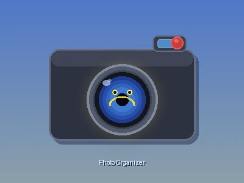

Ed Barlow
Home
Projects
AI Process
AI User Experience
About Me
Contact
Ed Barlow
edward.m.barlow@gmail.com
(914) 837-4798
Photo Organizer/Deduplicator
Documentation
Documentation

Photo Organizer/Deduplicator
OVERVIEW
Overview
FEATURES
Features
The Scan Tab
The Preferences / Analyze Tab
The Review Copy Plan Tab
The ReOrganize Tab
Safety Features
SYSTEM
Architecture
Flows
Development
Photo Organizer/Deduplicator
Photo Scanner/Organizer/Deduplicator
ACTIVE
Python
Tkinter
PyInstaller